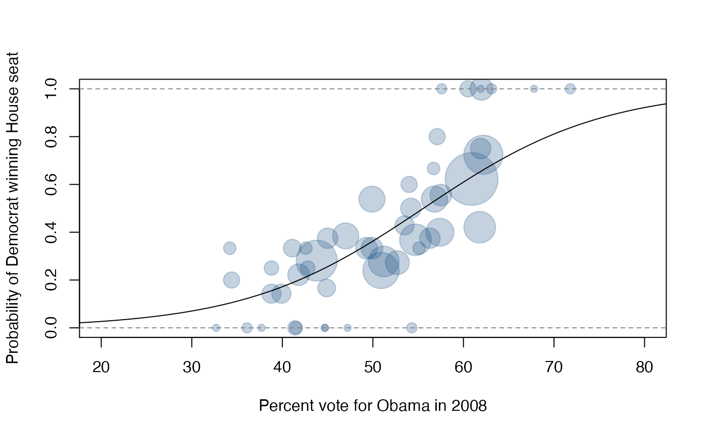

Election results for the 2008 U.S. Presidential race
Format
A data frame with 51 observations on the following 7 variables.
- state
State name abbreviation
- state_full
Full state name
- n_obama
Number of votes for Barack Obama
- p_obama
Proportion of votes for Barack Obama
- n_mc_cain
Number of votes for John McCain
- p_mc_cain
Proportion of votes for John McCain
- el_votes
Number of electoral votes for a state
Source
Presidential Election of 2008, Electoral and Popular Vote Summary, retrieved 2011-04-21.
Details
In Nebraska, 4 electoral votes went to McCain and 1 to Obama. Otherwise the electoral votes were a winner-take-all.
Examples
# ===> Obtain 2010 US House Election Data <===#
hr <- table(houserace10[, c("abbr", "party1")])
nr <- apply(hr, 1, sum)
# ===> Obtain 2008 President Election Data <===#
pr <- prrace08[prrace08$state != "DC", c("state", "p_obama")]
hr <- hr[as.character(pr$state), ]
(fit <- glm(hr ~ pr$p_obama, family = binomial))
#>
#> Call: glm(formula = hr ~ pr$p_obama, family = binomial)
#>
#> Coefficients:
#> (Intercept) pr$p_obama
#> -5.726 0.103
#>
#> Degrees of Freedom: 49 Total (i.e. Null); 48 Residual
#> Null Deviance: 107.4
#> Residual Deviance: 48.72 AIC: 138.7
# ===> Visualizing Binomial outcomes <===#
x <- pr$p_obama[pr$state != "DC"]
nr <- apply(hr, 1, sum)
plot(x, hr[, "Democrat"] / nr,
pch = 19, cex = sqrt(nr), col = "#22558844",
xlim = c(20, 80), ylim = c(0, 1), xlab = "Percent vote for Obama in 2008",
ylab = "Probability of Democrat winning House seat"
)
# ===> Logistic Regression <===#
x1 <- pr$p_obama[match(houserace10$abbr, pr$state)]
y1 <- (houserace10$party1 == "Democrat") + 0
g <- glm(y1 ~ x1, family = binomial)
X <- seq(0, 100, 0.1)
lo <- -5.6079 + 0.1009 * X
p <- exp(lo) / (1 + exp(lo))
lines(X, p)
abline(h = 0:1, lty = 2, col = "#888888")
